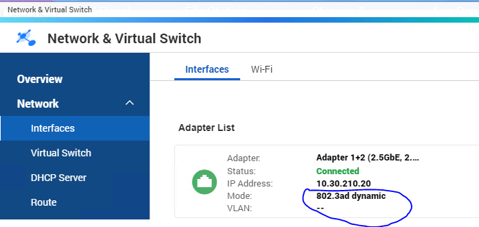
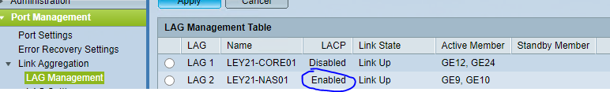

QNAP Inrichten NAS
Inhoudsopgave
Inleiding
Dit is een handleiding die opgesteld is voor de altijd groeiende dataopslag van Montapacking. Het gebruik van NAS-sen wordt ingezet in de 2 datacenters. De QNAP die in deze handleiding is ingesteld is een QNAP ts-863u-rp, wellicht verandert de hardware in de toekomst maar niet de software.
Deze handleiding beschrijft alleen het configureren en klaarmaken van een NAS. De inrichting van Veaam en PTRG zijn niet in dit document beschreven.
1. Voorbereidingen treffen voor het instellen van een NAS
1.1 Fysieke voorbereidingen
Voordat je een NAS gaat instelling is het belangrijk het een en ander in te stellen. Naamgeving is EIN-NASXX en ROT-NASXX kijk waar de NAS komt en geef het een nummer hoger.
Zet de NAS op een veilige plek met minimaal 2 netwerkaansluitingen
Prik de kabels in Poort 1 en 2 zoals hier getoond.

Onderstaande kan ook deels uitgevoerd worden door de installatie-wizard
te volgen.
De standaard beschrijving is van toepassin go pNAS-systemen in het
datacentre.
Voor NAS-systemen op locaties staan de afwijkende instellingen in
bijlages.
1.2 Vinden van de NAS op het netwerk
Als de NAS op een switch wordt aangesloten krijgt deze een DHCP-adres.
Het IP-nr kan als volgt achterhaald worden :
Gebruik Advanced portscanner die zich bevindt op
"\\mp-fs102\Software\Advanced Port scanner" lees daarmee het hele
netwerk uit totdat je de NAS ziet verschijnen je kunt hem herkennen aan
de fabrikant. Typ het IP over in de browser.
1.3 Updaten van de QNAP NAS.
Voordat we gaan beginnen met instellen gaan we eerst de NAS updaten.
Bij andere modellen wordt dat door de initiële wizard al uitgevoerd.
Ga naar het startscherm.
Open Control Panel.
Ga naar Firmware Update.

Druk daarna op Check For Update en voer de update als de update klaarstaat.

2. Welkominstellingen QNAP
Je ziet welkom scherm en vul de gegevens in die je moet invullen. Geef het een tijdelijk wachtwoord zoals Montapacking.

Stel de tijdzone in als Amsterdam en hou de huidige NTP-pool test deze wel even.

De volgende pagina die je ziet is Network settings. Deze laat je even voor wat het is. Het geven van een vast IP wordt pas gedaan in het datacenter zelf.
Voor de optie cross-platform vink hou de selectie alleen op Windows.

Wacht tot de welkom configuratie is voltooid.
 Na het instellen kan je bij de loginpagina
inloggen met admin en je tijdelijke wachtwoord.
Na het instellen kan je bij de loginpagina
inloggen met admin en je tijdelijke wachtwoord.
3. Netwerkinstellingen NAS
Op het NAS managementscherm ga naar control panel.

Bij control panel ga je naar Network daarna naar Network & Virtual Switch.

Ga rechtsboven naar Port Trunking. Druk op Add.
Bij switch type gebruik je Most common.

Verbind adapter 1 en 2 aan elkaar en zorg dat de mode op Balance-alb staat.

Hierboven is een voorbeeld van een correct ingestelde netwerk adapter. En hieronder de specificaties.

4. Opslagpool Configureren
Op het NAS managementscherm ga naar control panel.
Start Storage & Snapshots.
 Er opent zich een wizard die we gaan
doorlopen.
Er opent zich een wizard die we gaan
doorlopen.
Druk op volgende
Selecteer alle schijven die zich bevinden in de NAS. Zet raid type op RAID 5 (als er voldoende ruimte is kun je ook voor RAID 6 kiezen dan kunnen er 2 disken falen) en Druk op volgende.

Bij Waarschuwing drempelwaarde zet je uit.

Geef het een naam die correspondeert met de NAS.
Zet de opslag pool op max we gebruiken de hele pool. Bytes per inode gaat op 64k.

Nadat de wizard is doorgelopen druk op Nieuw Volume.
 {
{
5. Volume instellingen configureren.
De wizard die zich opent na de Opslagpool-wizard is de Volume-Wizard.
Je locatie is Opslagpool 1 dat is de pool die je net hebt aangemaakt.
Selecteer ook een Thick
volume.
Selecteer alle schijven van de machine en druk op volgende.

Dit is een voorbeeld van een goed ingesteld volume.

6. Gebruikers en Rechten
Op het NAS managementscherm ga naar control panel.
Start
Users.
Klik op Create.
Het Backupaccount gaat heten rs.NASbackup en deze gaat een tijdelijkwachtwoord krijgen gebruik hiervoor Montapacking2021. Let op dat je dit account geen lid maakt van administrator.

Dit is alles wat er voor dit user account uitgevoerd dient te worden.
7. SNMP
Op het NAS managementscherm ga naar control panel.
Start **SNMP.
**
Neem het volgende exact over.

Dit is voor de PRTG-sensoren die later toegevoegd worden bij het plaatsen in het datacenter.
8. Uitzetten van de Network Recycle Bin
Op het NAS managementscherm ga naar Control panel.
Start Network Recycle bin.

Zet deze uit.

9. Configuratie voor de Shares
9.1 Verbergen van de bestaande shares
Op het NAS managementscherm ga naar Control panel.
Start Shared Folders.

Je ziet 3 mappen (Public, Web en homes) die we gaan verbergen. Dat doe je zo
Ga naar de standaard share en klik op Edit Properties.

Klik op Hide network drive

Doe dit ook voor de shares Web en homes.
9.2 Maken van de VEEAM Share
In nog steeds hetzelfde scherm van shares druk je nu op Create.
Daarna Shared Folder.
De folder name wordt VEEAM.
Disk volume laat je op de naam die je hebt gegeven in dit geval ROT4
Path laat je automatisch toewijzen.
Bij Configure acces geef je beide accounts Schrijf en Lees rechten.

Bij de optie onderaan Guest Access Right zet je op Deny Access

 Je overzicht ziet er nu zo uit
Je overzicht ziet er nu zo uit
10. Beveiliging
10.1 Algemene beveiliging Instellingen
Op het NAS managementscherm ga naar Control panel.
Start General Settings.

Schakel HTTP Compression uit.
Enable HTTPS.
Force HTTPS only.

10.2 SSH/Telnet Uitzetten
Op het NAS managementscherm ga naar Control panel.
Start Telnet/ SSH.

Vink Allow Telnet uit.
Vink Allow SSH uit.

10.2 SNMP
Op het NAS managementscherm ga naar Control panel.
Start SNMP.
Zet SNMP-service aan.
Verander de port naar 161.
Zet SNMP Version op SNMP V1/V2
Vul in Community MRTG in.

Dit is later voor de PTRG Sensoren die we in het datacenter gebruiken.
10.3 Security Counselor
Op het NAS managementscherm start naar App center.

Klik op bij de Sidebar op Security.
Druk op Install Security Counselor.

Bij Security analytics druk je op No.
Ga voor een Advanced Security Policy.

Druk daarna op Scan now.
Er gaat een scan starten die we gaan doorlopen.
Los alle warnings op totdat je met deze 9 overblijft. Wij Beheren deze oplossingen zelf.

Na deze stap sluit je het programma weer af.
Geef de NAS een herstart om zeker te weten dat alle instellingen goed staan.
**
**
11 Notification center
Op het NAS managementscherm ga naar Control panel.
Start Notification Center.
 Druk bij overview op Email daarna op add
SMPT Service
Druk bij overview op Email daarna op add
SMPT Service

 Neem de volgende gegevens over.
Neem de volgende gegevens over.
SMTP Server: Relay.Reputy.nl
Secure Connection: none
Port Nummer: 25
Email: NOC@montapacking.nl
Ga via de sidebar naar System Notification rules.

Druk op Alert Notifications.
 Druk op Create Rule.
Druk op Create Rule.

Geef De regel een naam en vink alle events aan.
Druk op next.

Vul enkel nog bij recepient servicedesk@monta.nl in. De rest vult hij zelf aan

Nu heb je een regel gecreëerd die alle e-mails doorstuurt naar de servicedesk.

Stel in de security counselor bij de security policy "Basic Security Policy" in.

Bijlage 1 Instellingen XXXXX-NAS01 (NAS op locatie)
In onderstaand voorbeeld wordt uitgegaan van LEY21-NAS01. Voor een andere locatie zijn alleen de namen van de accounts en het NAS zelf anders.

Maak op de switch een LAG aan op basis van LACP. 
Maak user "rs.ley21nas01" (bedoeld voor CVP) aan en "rs.ley21nas02"
(bedoeld voor server in datacentre).
Creëer shared folder "CVPData", geef "rs.ley21nas01" en "rs.ley21nas02"
RW rechten.

Share te benaderen als
\\ley21-nas01\cvpdata
QuFirewall geïnstalleerd (Via appcenter \ Security).
Alleen toegang ingesteld op subnet van de locatie en die van het
datacentre.